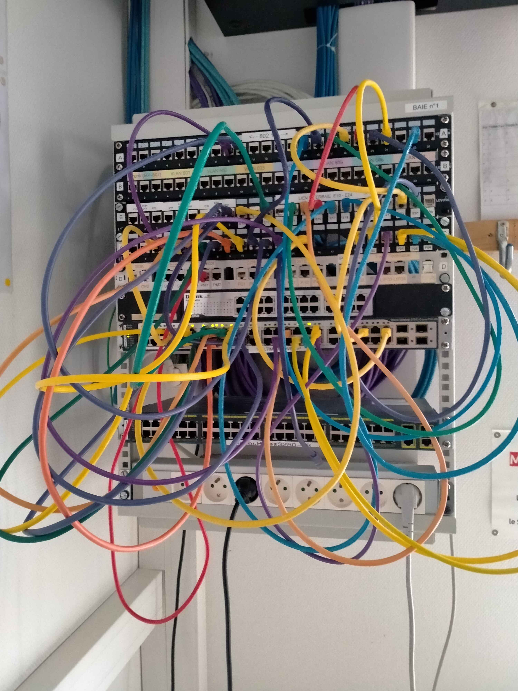
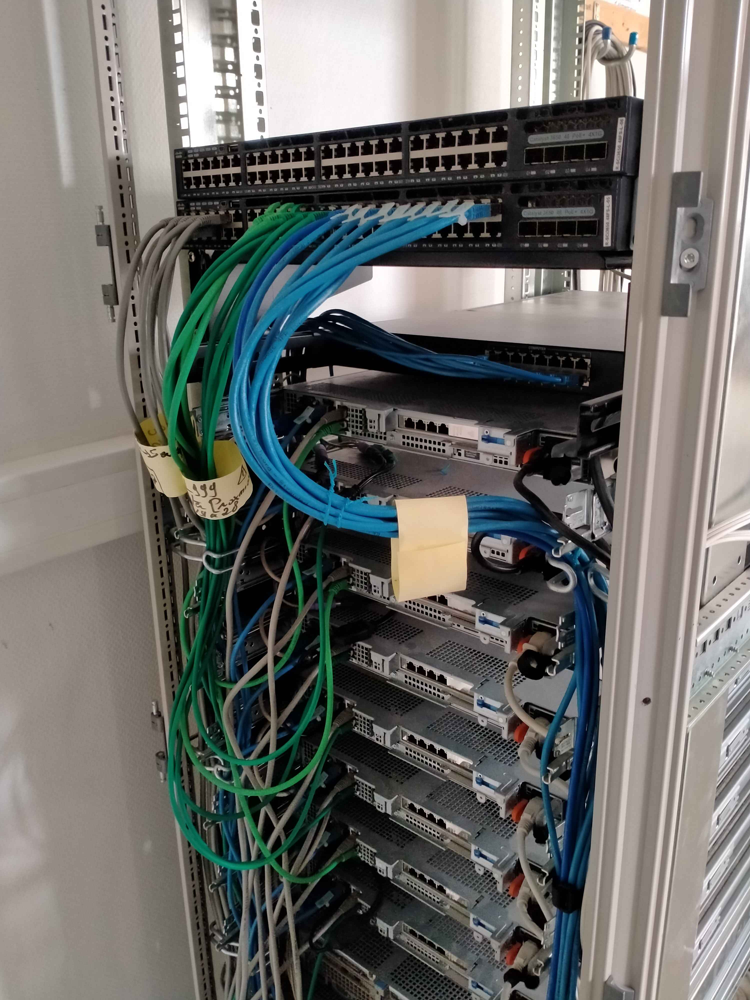
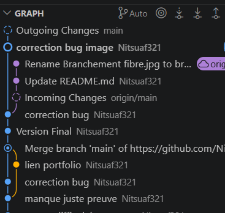
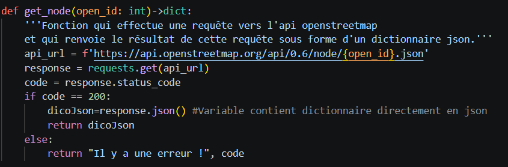

Semestre 1 - Tronc Commun
SAÉ 1.01
Se sensibiliser à l'hygiène informatique et à la cybersécurité
Contexte et objectifs
Dans le cadre de la SAÉ 1.01 « Se sensibiliser à l'hygiène informatique et à la cybersécurité », l'objectif était de découvrir les bonnes pratiques de sécurité numérique et de comprendre les bases de la cybersécurité.
Le projet reposait sur plusieurs activités : une autoformation via le MOOC de l'ANSSI, un travail de recherche en groupe sur une thématique liée à la cybersécurité, ainsi qu'une mise en pratique sous forme de TP et de défis type Capture The Flag (CTF).
L'objectif final était d'être capable de sensibiliser des utilisateurs non spécialistes aux bonnes pratiques de sécurité informatique.
Compétences mobilisées
Apprentissages Critiques (AC)
RT1 – Administrer les réseaux et l'Internet — Niveau 1 – Assister l'administrateur du réseau
AC11.02 Comprendre l'architecture et les fondements des systèmes numériques, les principes du codage de l'information, des communications et de l'Internet → Compréhension du fonctionnement des systèmes numériques et des bases de la cybersécurité.
AC11.04 Maîtriser les rôles et les principes fondamentaux des systèmes d'exploitation afin d'interagir avec ceux-ci pour la configuration et l'administration des réseaux et services fournis → Utilisation d'environnements Linux et découverte des outils réseau et systèmes.
AC11.05 Identifier les dysfonctionnements du réseau local et savoir les signaler → Identification de vulnérabilités et compréhension des risques liés à la sécurité informatique.
AC11.02 Comprendre l'architecture et les fondements des systèmes numériques, les principes du codage de l'information, des communications et de l'Internet → Compréhension du fonctionnement des systèmes numériques et des bases de la cybersécurité.
AC11.04 Maîtriser les rôles et les principes fondamentaux des systèmes d'exploitation afin d'interagir avec ceux-ci pour la configuration et l'administration des réseaux et services fournis → Utilisation d'environnements Linux et découverte des outils réseau et systèmes.
AC11.05 Identifier les dysfonctionnements du réseau local et savoir les signaler → Identification de vulnérabilités et compréhension des risques liés à la sécurité informatique.
Situation et rôle
J'ai travaillé au sein d'un groupe chargé d'étudier une thématique liée à la cybersécurité (mots de passe, accès SSH ou découverte réseau selon le sujet choisi).
Mon rôle consistait à effectuer des recherches techniques, tester différents outils de sécurité, participer à la rédaction d'une notice collaborative, préparer une présentation orale, et mettre en pratique certaines notions lors des TP et exercices CTF.
Démarche et actions
Suivi du MOOC de l'ANSSI sur l'hygiène numérique — Réalisation des quiz et préparation du QCM final — Constitution du groupe et répartition des tâches — Recherche documentaire sur la thématique attribuée — Expérimentation d'outils de cybersécurité sous Debian/Linux — Rédaction d'un document technique collaboratif — Préparation de supports de présentation (diapositives) — Présentation orale du travail réalisé — Participation aux exercices pratiques de type Capture The Flag
Déroulé du projet
Le projet s’est déroulé de telle sorte que nous avons réparti les recherches sur le protocole SSH afin de les regrouper ensuite dans un diaporama pour préparer le passage à l’oral.
En parallèle, nous avons travaillé sur le MOOC de l’ANSSI afin d’obtenir la certification.
Résultats obtenus
Le projet a permis d'acquérir les bases de l'hygiène informatique et de la cybersécurité. Le groupe a produit une documentation technique claire et une présentation orale expliquant les recherches et expérimentations réalisées. Les activités pratiques ont permis de mieux comprendre les mécanismes de sécurité et les risques liés aux systèmes informatiques.
Points forts
Travail collaboratif efficace — Découverte concrète des outils de cybersécurité — Bonne compréhension des bonnes pratiques numériques — Expérience pratique grâce aux exercices CTF — Développement des compétences de communication orale — Sensibilisation aux enjeux de sécurité informatique
Difficultés rencontrées
Cette SAÉ nous a montré à quel point nous étions débutants, n’étant pas du tout familiarisés avec le matériel et le système d’exploitation utilisés. Le manque d’expérience nous a fait défaut.
Apprentissages et compétences développées
Cette SAÉ m'a permis de développer mes connaissances en cybersécurité et en hygiène numérique. J'ai appris à adopter de bonnes pratiques de sécurité, comprendre les risques informatiques courants, utiliser des outils réseau et de sécurité sous Linux, travailler efficacement en groupe, présenter des informations techniques à l'oral, et réaliser des recherches techniques de manière autonome.
Traces et preuves
📝 Description
Comme vous pouvez le voir sur le diapo les Slide 5 et 13 se ressemble du à un manque de communication les deux personnes concerner on fais la même chose alors que la slide 13 aurais du traiter d'un autre sujet.
Évaluation des compétences
Analyse réflexive
Ce que j'ai bien réussi
Ce que j’ai bien réussi, c’est trouver et utiliser les informations sur les options que comporte le protocole SSH.
Ce que je ferais différemment
Ce que je ferais différemment, c’est davantage aider mes camarades sur leur partie, ayant bien réussi la mienne efficacement et rapidement.
Axes de progression identifiés
L’axe à travailler est le travail en équipe, notamment aider mes camarades même lorsqu’ils ne le demandent pas.
SAÉ 1.02
S'initier aux réseaux informatiques
Contexte et objectifs
Dans le cadre de la SAÉ 1.02 « S'initier aux réseaux informatiques », l'objectif était de concevoir et mettre en œuvre une infrastructure réseau complète pour une entreprise fictive nommée Fibre&Company.
L'entreprise souhaitait moderniser son réseau afin d'améliorer ses performances, sa sécurité et sa capacité à accueillir un plus grand nombre d'utilisateurs.
Le projet consistait à configurer des équipements réseau (switchs, routeur, serveur Debian virtualisé), mettre en place des VLANs, des services réseau et différents mécanismes de sécurité, puis vérifier le bon fonctionnement de l'ensemble de l'infrastructure.
Compétences mobilisées
Apprentissages Critiques (AC)
RT1 – Administrer les réseaux et l'Internet — Niveau 1 – Assister l'administrateur du réseau
AC11.01 Maîtriser les lois fondamentales de l'électricité afin d'intervenir sur des équipements de réseaux et télécommunications → Compréhension du fonctionnement physique des équipements réseau.
AC11.02 Comprendre l'architecture et les fondements des systèmes numériques, les principes du codage de l'information, des communications et de l'Internet → Étude de l'architecture d'un réseau d'entreprise et des communications réseau.
AC11.03 Configurer les fonctions de base du réseau local → Configuration des VLANs, du routage, des switchs et des services réseau.
AC11.04 Maîtriser les rôles et les principes fondamentaux des systèmes d'exploitation afin d'interagir avec ceux-ci pour la configuration et l'administration des réseaux et services fournis → Administration d'un serveur Debian et configuration des services réseau.
AC11.05 Identifier les dysfonctionnements du réseau local et savoir les signaler → Réalisation de tests réseau et diagnostic des problèmes de connectivité.
AC11.06 Installer un poste client, expliquer la procédure mise en place → Installation et configuration des postes et machines virtuelles.
AC11.01 Maîtriser les lois fondamentales de l'électricité afin d'intervenir sur des équipements de réseaux et télécommunications → Compréhension du fonctionnement physique des équipements réseau.
AC11.02 Comprendre l'architecture et les fondements des systèmes numériques, les principes du codage de l'information, des communications et de l'Internet → Étude de l'architecture d'un réseau d'entreprise et des communications réseau.
AC11.03 Configurer les fonctions de base du réseau local → Configuration des VLANs, du routage, des switchs et des services réseau.
AC11.04 Maîtriser les rôles et les principes fondamentaux des systèmes d'exploitation afin d'interagir avec ceux-ci pour la configuration et l'administration des réseaux et services fournis → Administration d'un serveur Debian et configuration des services réseau.
AC11.05 Identifier les dysfonctionnements du réseau local et savoir les signaler → Réalisation de tests réseau et diagnostic des problèmes de connectivité.
AC11.06 Installer un poste client, expliquer la procédure mise en place → Installation et configuration des postes et machines virtuelles.
Situation et rôle
J'ai travaillé en tant qu'administrateur réseau junior chargé de déployer un prototype d'infrastructure réseau pour l'entreprise Fibre&Company.
Mon rôle consistait à configurer les équipements réseau, mettre en place les VLANs et le routage, installer et administrer le serveur Debian, configurer les services réseau, renforcer la sécurité de l'infrastructure, et réaliser des tests de fonctionnement et de performances.
Démarche et actions
Étude du cahier des charges et de l'architecture réseau demandée — Création du plan d'adressage IPv4 et découpage des VLANs — Configuration des switchs Cisco (VLAN, RSTP, agrégation de liens, DHCP) — Mise en place du routage inter-VLAN et du routage vers Internet — Installation d'une machine virtuelle Debian sans interface graphique — Partitionnement et configuration des systèmes de fichiers Linux — Création automatisée des comptes utilisateurs — Installation et configuration des services : DHCP, DNS (Bind9), partage SMB, serveur web Apache2, SSH sécurisé — Mise en œuvre des mécanismes de sécurité réseau : désactivation de Telnet et HTTP, sécurisation SSH, VLAN natif pour ports inutilisés, protections sur les switchs — Réalisation des tests réseau et vérification des fonctionnalités
Déroulé du projet
Le déroulement du projet SEA-1.02 a débuté par une analyse détaillée du projet afin de mieux répartir le travail. Une fois cela fait, chacun a pris en charge un élément à programmer, comme le routeur, les switchs, les switchs L2/L3 ainsi que le serveur Proxmox avec la machine virtuelle installée dessus.
Nous avons mis la VM un peu de côté au début afin d’être sûrs d’avoir une infrastructure réseau fonctionnelle. Ensuite, j’ai directement mis en place le service TFTP sur la VM, ce qui nous permettait de sauvegarder les configurations du routeur et des switchs, car sinon il aurait fallu tout refaire à chaque fois.
Une fois l’architecture réseau terminée et fonctionnelle, nous l’avons connectée à la box Internet de l’IUT afin que n’importe quel PC de notre réseau puisse avoir accès à Internet.
Nous avons terminé par finaliser la configuration de la VM et essayer de la connecter à notre réseau. Enfin, la notation de la maquette a eu lieu juste après, ce qui a marqué la fin du projet.
Résultats obtenus
Le projet a permis de mettre en place une infrastructure réseau fonctionnelle et sécurisée répondant aux besoins de l'entreprise fictive. Les VLANs, le routage inter-VLAN et les différents services réseau ont été configurés avec succès. Le serveur Debian a été correctement déployé et les mécanismes de sécurité ont renforcé la protection de l'infrastructure. Les différents tests réalisés ont permis de valider le bon fonctionnement du réseau et des services.
Points forts
Infrastructure réseau complète et cohérente — Bonne segmentation du réseau avec les VLANs — Mise en œuvre de services réseau variés — Utilisation concrète des équipements Cisco — Renforcement de la sécurité réseau — Découverte approfondie de l'administration Linux — Validation du projet grâce à des tests techniques
Difficultés rencontrées
Cette SAÉ nous a montré à quel point nous étions débutants. Le manque de connaissances, notamment sur l’utilisation des machines virtuelles (VM) et des services utilisés comme SAMBA, nous a énormément mis en difficulté. Il y a également le fait d’utiliser des serveurs Proxmox, qui ont nécessité une installation particulière ainsi qu’un câblage spécifique.
Apprentissages et compétences développées
Cette SAÉ m'a permis de développer mes compétences en réseaux et en administration système. J'ai appris à configurer des switchs et routeurs Cisco, mettre en place des VLANs et du routage, administrer un serveur Debian, configurer des services réseau professionnels, sécuriser une infrastructure informatique, réaliser des tests de connectivité et de performances, et travailler de manière plus autonome sur un projet technique complexe.
Traces et preuves
📝 Description


La difficulté sur cette sae à était la VM car longue et compliqué mais ce qui m'a vraiment mis en difficulté c'est le branchement à réaliser au niveau du serveur PROMOX. Car au début du projet les profs m'ont montrer un branchement pour avoir en un point la box et PROMOX en même temps au meême endroit ce qui était parfait pour le début du projet. Sauf qu'arriver à un certain endroit du projet il faut que le branchement es uniquement le serveur PROMOX et c'est nottre routeur qui dois être connecter à la box. C'est le routeur qui apporte tous l'internet à la maquette y compris pour le serveur PROMOX. Cependant il fallait faire un cablage trés préçis qui était expliquer dans la documentation des serveurs PROMOX mais c'était pas clair du tous le shéma de montage corresponder pas du tous, j'ai donc pas reussi cette partie.
Évaluation des compétences
Analyse réflexive
Ce que j'ai bien réussi
Ce que j’ai bien réussi, c’est le câblage du mini-système réseau d’entreprise, qui s’est avéré complexe mais réalisable assez facilement en prenant suffisamment de recul sur la maquette réalisée.
Ce que je ferais différemment
Ce que je ferais différemment, c’est d’attaquer la partie VM plus tôt et plus sérieusement, car je ne réalisais pas la quantité de travail à fournir pour la rendre opérationnelle avec tout ce qui était demandé.
Axes de progression identifiés
Il faut que je réfléchisse mieux à la répartition des efforts fournis sur les différentes tâches à réaliser lors d’un projet.
Il faut que je prenne plus de recul afin de mieux concentrer mes efforts aux bons endroits.
SAÉ 1.03
Découverte d'un dispositif de transmission
Contexte et objectifs
Dans le cadre de la SAÉ 1.03 « Découverte d'un dispositif de transmission », l'objectif était d'étudier les supports physiques de transmission utilisés dans les réseaux : les câbles cuivre et la fibre optique.
Le projet avait pour but de comprendre les méthodes de mesure et de caractérisation des supports de transmission, comme cela est réalisé dans le domaine professionnel avec des équipements de certification réseau.
Les travaux réalisés combinaient des manipulations pratiques, des mesures physiques, une étude documentaire, la rédaction de rapports techniques, et un QCM final portant sur l'ensemble de la SAÉ.
Compétences mobilisées
Apprentissages Critiques (AC)
RT2 – Connecter les entreprises et les usagers — Niveau 1 : Découvrir les transmissions et la ToIP
AC12.01 Mesurer et analyser les signaux → Réalisation de mesures avec un oscilloscope, un analyseur DTF et des outils de photométrie pour analyser les caractéristiques des supports de transmission.
AC12.02 Caractériser des systèmes de transmission élémentaires et découvrir la modélisation mathématique de leur fonctionnement → Calcul de la longueur des câbles, mesure du temps de propagation, détermination de la NVP et étude de l'atténuation des liaisons fibre optique.
AC12.03 Déployer des supports de transmission → Manipulation et câblage de liaisons cuivre et fibre optique lors des travaux pratiques et du projet.
AC12.05 Communiquer avec un tiers (client, collaborateur...) et adapter son discours et sa langue à son interlocuteur → Rédaction de rapports techniques clairs et présentation des résultats de mesures obtenus pendant les expérimentations.
AC12.01 Mesurer et analyser les signaux → Réalisation de mesures avec un oscilloscope, un analyseur DTF et des outils de photométrie pour analyser les caractéristiques des supports de transmission.
AC12.02 Caractériser des systèmes de transmission élémentaires et découvrir la modélisation mathématique de leur fonctionnement → Calcul de la longueur des câbles, mesure du temps de propagation, détermination de la NVP et étude de l'atténuation des liaisons fibre optique.
AC12.03 Déployer des supports de transmission → Manipulation et câblage de liaisons cuivre et fibre optique lors des travaux pratiques et du projet.
AC12.05 Communiquer avec un tiers (client, collaborateur...) et adapter son discours et sa langue à son interlocuteur → Rédaction de rapports techniques clairs et présentation des résultats de mesures obtenus pendant les expérimentations.
Situation et rôle
J'ai travaillé au sein d'un groupe chargé de réaliser des mesures et d'analyser différents supports de transmission réseau.
Mon rôle consistait à effectuer les manipulations pratiques, utiliser les appareils de mesure, calculer les caractéristiques physiques des liaisons, analyser les résultats obtenus, et participer à la rédaction des rapports techniques.
Démarche et actions
Étude des documents techniques et préparation d'une fiche de synthèse — Réalisation de mesures DTF sur des câbles coaxiaux et Ethernet — Utilisation d'un GBF et d'un oscilloscope pour mesurer le temps de propagation des impulsions — Calcul de la longueur des câbles et de leur NVP — Réalisation d'une liaison fibre optique — Mesure de l'atténuation par photométrie sur fibre optique — Analyse et comparaison des résultats obtenus — Rédaction des deux rapports techniques demandés — Préparation du QCM final sur les notions étudiées
Déroulé du projet
Le déroulement du projet s’est fait de manière à ce que nous réalisions le TP en priorité afin de réviser pour le contrôle final avec les heures restantes. Nous avons directement commencé par le TP sur la fibre, car le matériel était disponible.
Nous avons effectué les mesures sur la fibre et appris à manipuler le matériel afin de comparer les valeurs obtenues avec nos calculs théoriques d’atténuation du signal. Une fois cela fait, nous avons réalisé les mesures avec les câbles Ethernet RJ45.
Nous avons ensuite rédigé les comptes rendus puis révisé avec les heures restantes pour le contrôle final.
Résultats obtenus
Le projet a permis de comprendre les principes de transmission sur câble cuivre et fibre optique ainsi que les méthodes de mesure utilisées dans le domaine professionnel.
Les manipulations réalisées ont permis d'obtenir des mesures cohérentes concernant la longueur des câbles, la vitesse de propagation des signaux et l'atténuation d'une liaison fibre optique.
Les rapports techniques ont synthétisé les résultats et les méthodes utilisées pendant les expérimentations.
Points forts
Mise en pratique concrète des notions théoriques — Utilisation d'appareils de mesure professionnels — Bonne compréhension des supports de transmission — Développement des compétences d'analyse et de calcul — Travail collaboratif efficace — Rédaction de rapports techniques structurés
Difficultés rencontrées
Cette SAÉ nous a montré notre manque de connaissances sur la fibre optique et ses manipulations si précises et délicates. Il y a aussi eu un problème d’organisation, car nous avons dû dénuder les câbles Ethernet par nos propres moyens. Ce n’était pas compliqué en soi, mais cela nous a fait perdre du temps qui n’était pas prévu.
Apprentissages et compétences développées
Cette SAÉ m'a permis de développer mes compétences en transmission et en mesures réseau. J'ai appris à utiliser un oscilloscope et un analyseur DTF, mesurer les caractéristiques d'un câble réseau, analyser la propagation des signaux, comprendre les principes de la fibre optique, interpréter des résultats de mesures techniques, et rédiger des rapports techniques professionnels.
Traces et preuves
📝 Description
Comme vous pouvez le voir dans le compte rendu ethernet les cablage réaliser est plutot compliquer car il faut dénuder les cables et choisir la bonne paire et surtout la même car sinon ça marche pas, c'est pas simple.
📝 Description
Ce qui est compliquer c'est faire le montage où il faut tous le temps nettoyer car à la moindre saleter ou impurter gène le signal et donne de movaise mesure. Dans notre cas nous avions pas d'exemple donc on ne savais pas si le montage était mauvais avec nos mesures ou si nos calcul était mauvais. On a donc comparé avec d'autre groupe pour voir que le montage était bien mais certaine j'artierre fibre était trop sale.
Évaluation des compétences
Analyse réflexive
Ce que j'ai bien réussi
Ce que j’ai bien réussi, c’est de mettre en pratique les connaissances mises à disposition pour apprendre comment fonctionnent la fibre et le câble RJ45 (Ethernet).
Ce que je ferais différemment
Ce que je ferais différemment, c’est déléguer un peu plus de tâches à mes camarades.
Axes de progression identifiés
L’axe de progression est le travail en équipe, dans lequel, durant cette SAE, j’aurais dû davantage partager le travail et en faire moins moi-même.
SAÉ 1.04
Créer un site Web multipage
Contexte et objectifs
Dans le cadre de la SAÉ 1.04, l'objectif était de concevoir et développer un site Web multipage en HTML et CSS. Le thème du site étant libre, cela permettait de créer un projet personnel autour d'un centre d'intérêt (sport, jeux vidéo, musique, voyage, etc.).
Le projet devait respecter plusieurs contraintes techniques : création d'un site responsive, utilisation de Flexbox et/ou CSS Grid, respect des standards du Web (validation W3C), prise en compte de l'accessibilité numérique (WCAG 2.0 AA) et mise en ligne du projet via GitHub Pages.
Compétences mobilisées
Apprentissages Critiques (AC)
RT3 – Créer des outils et des applications informatiques pour les R&T — Niveau 1 – S'intégrer dans un service informatique
AC13.01 Utiliser un système informatique et ses outils → Utilisation d'éditeurs de code, GitHub et outils de validation Web.
AC13.04 Connaître l'architecture et les technologies d'un site Web → Développement d'un site Web responsive en HTML/CSS avec mise en page moderne.
AC13.01 Utiliser un système informatique et ses outils → Utilisation d'éditeurs de code, GitHub et outils de validation Web.
AC13.04 Connaître l'architecture et les technologies d'un site Web → Développement d'un site Web responsive en HTML/CSS avec mise en page moderne.
Situation et rôle
J'ai travaillé en tant que développeur Web débutant chargé de concevoir et réaliser un site Web complet.
Mon rôle consistait à imaginer le design du site, développer les différentes pages, intégrer les contenus, rendre le site responsive, tester et corriger les erreurs HTML/CSS, et publier le projet sur GitHub Pages.
Démarche et actions
Choix du thème et définition de l'arborescence du site — Réalisation des maquettes et choix de la charte graphique — Création des pages HTML : accueil, contenu principal et page "À propos" — Mise en forme avec CSS en utilisant Flexbox et CSS Grid — Ajout d'animations CSS pour améliorer l'expérience utilisateur — Adaptation du site aux différents formats d'écran (mobile, tablette, ordinateur) — Vérification de la validité du code avec les outils W3C — Mise en ligne du projet via GitHub Pages — Gestion du projet avec plusieurs commits Git explicites
Déroulé du projet
Le projet s’est déroulé assez rapidement et en lien avec la ressource R115 Gestion de projet. J’ai commencé par analyser le projet, où j’ai vite compris qu’il fallait bien préparer à l’avance certains livrables comme le Trello et le diagramme de Gantt. J’ai ensuite pu réfléchir au thème de mon site et ainsi le réaliser. J’ai créé mon site tout en notant mon avancée sur le Trello, jusqu’à terminer le site et tout rendre en finalisant par la réalisation d’un compte rendu.
Résultats obtenus
Le projet final est un site Web multipage fonctionnel, responsive et accessible. Le site respecte les standards HTML/CSS, possède une navigation claire et une identité visuelle cohérente. Les différentes pages s'affichent correctement sur plusieurs appareils et le projet a été publié en ligne via GitHub Pages.
Points forts
Interface moderne et agréable visuellement — Site responsive adapté à tous les écrans — Utilisation correcte de Flexbox/CSS Grid — Code organisé et structuré — Respect des normes du Web et de l'accessibilité — Gestion de projet avec GitHub et commits réguliers
Difficultés rencontrées
Cette SAÉ nous a montré la difficulté d’animer un site sans avoir de connaissances en Java.
Apprentissages et compétences développées
Cette SAÉ m'a permis de renforcer mes compétences en développement front-end et en conception Web. J'ai appris à créer un site responsive, structurer proprement un projet Web, utiliser Git et GitHub efficacement, respecter les standards du Web, améliorer l'ergonomie et l'accessibilité d'un site, et travailler de manière plus autonome sur un projet complet.
Traces et preuves
📝 Description
📝 Description
Voici un lien vers mon site qui montre le rendu final ainsi que les animations, dont la programmation m’a donné du fil à retordre. Malgré certains modèles disponibles sur Internet, il a toujours fallu tout adapter et placer correctement les éléments dans les bonnes balises afin d’obtenir le rendu souhaité.

Voici l’historique des commits Git du projet, montrant les différentes branches ainsi que l’avancement du développement du site web.
Justement, les branches sont ce qui m’a posé le plus de problèmes. Normalement, elles servent surtout dans un projet collaboratif, lorsque plusieurs personnes travaillent sur différentes machines sur un même projet. De mon côté, j’ai utilisé plusieurs machines différentes sans vraiment comprendre le fonctionnement des branches au départ, ce qui en a créé plusieurs inutilement.
J’ai donc dû faire beaucoup de recherches afin de comprendre leur fonctionnement, supprimer les branches inutiles et conserver uniquement ma branche principale ("main"), c’est-à-dire la version globale et stable de mon projet.
Évaluation des compétences
Analyse réflexive
Ce que j'ai bien réussi
Ce que j’ai bien réussi est la répartition du travail tout au long du projet. Cela m’a permis de réaliser le site dans les temps, sans contraintes de délai.
Ce que je ferais différemment
Ce que je ferais différemment, c’est mieux préparer ce projet en regardant des tutoriels sur le type de langage à utiliser lors du projet.
Axes de progression identifiés
L’axe de progression serait la préparation au projet afin d’améliorer au maximum ma maîtrise technique avant celui-ci, et ainsi être plus à l’aise avec le code.
SAÉ 1.05
Traiter des données
Contexte et objectifs
Dans le cadre de la SAÉ 1.05 « Traiter des données », l'objectif était de développer plusieurs outils en Python permettant d'exploiter les données du projet collaboratif OpenStreetMap. Le projet consistait à interroger différentes API afin de récupérer des informations géographiques, produire des statistiques et générer automatiquement des fiches aux formats Markdown et HTML.
Deux sous-projets principaux ont été réalisés : la création d'une fiche détaillée sur un point d'intérêt OpenStreetMap, et la récupération et l'analyse de données locales sur une zone géographique donnée.
Le projet devait également permettre la conversion automatique de fichiers Markdown vers HTML et être utilisable directement depuis le terminal via des scripts Python.
Compétences mobilisées
Apprentissages Critiques (AC)
RT3 – Créer des outils et des applications informatiques pour les R&T — Niveau 1 – S'intégrer dans un service informatique
AC13.01 Utiliser un système informatique et ses outils → Utilisation de Python, du terminal et des bibliothèques de traitement de données.
AC13.02 Lire, exécuter, corriger et modifier un programme → Développement et correction de scripts Python.
AC13.03 Traduire un algorithme, dans un langage et pour un environnement donné → Création d'algorithmes pour traiter des données OpenStreetMap.
AC13.04 Connaître l'architecture et les technologies d'un site Web → Génération automatique de pages HTML à partir de données traitées.
AC13.05 Choisir les mécanismes de gestion de données adaptés au développement de l'outil et argumenter ses choix → Manipulation de fichiers JSON, Markdown et HTML.
AC13.06 S'intégrer dans un environnement propice au développement et au travail collaboratif → Organisation modulaire du projet Python et travail collaboratif.
AC13.01 Utiliser un système informatique et ses outils → Utilisation de Python, du terminal et des bibliothèques de traitement de données.
AC13.02 Lire, exécuter, corriger et modifier un programme → Développement et correction de scripts Python.
AC13.03 Traduire un algorithme, dans un langage et pour un environnement donné → Création d'algorithmes pour traiter des données OpenStreetMap.
AC13.04 Connaître l'architecture et les technologies d'un site Web → Génération automatique de pages HTML à partir de données traitées.
AC13.05 Choisir les mécanismes de gestion de données adaptés au développement de l'outil et argumenter ses choix → Manipulation de fichiers JSON, Markdown et HTML.
AC13.06 S'intégrer dans un environnement propice au développement et au travail collaboratif → Organisation modulaire du projet Python et travail collaboratif.
Situation et rôle
J'ai travaillé en tant que développeur Python chargé de concevoir un outil d'analyse et de génération de données à partir d'OpenStreetMap.
Mon rôle consistait à récupérer les données via les API, traiter les informations JSON, automatiser la génération des fiches, calculer des statistiques pertinentes, documenter et structurer le code, et produire un rendu clair et exploitable en HTML et Markdown.
Démarche et actions
Étude du cahier des charges et des API OpenStreetMap — Création d'un module de conversion Markdown → HTML — Développement des fonctions permettant de récupérer les données d'un point d'intérêt OSM — Génération automatique de fiches Markdown et HTML — Utilisation de l'API Overpass pour récupérer des ensembles de données géographiques — Mise en place de calculs statistiques sur les données récupérées — Structuration des résultats dans des fichiers lisibles et organisés — Documentation des fonctions et tests des scripts Python — Vérification du bon fonctionnement depuis le terminal
Déroulé du projet
Nous avons commencé par analyser le cahier des charges et faire des recherches sur la connexion des API avec Python, ainsi que sur le fonctionnement d’une API. Suite à cela, nous nous sommes réparti le travail et avons avancé chacun de notre côté pour finalement assembler le code final et rendre le travail.
Résultats obtenus
Le projet final permet de générer automatiquement des fiches HTML et Markdown sur des points d'intérêt OpenStreetMap, de récupérer des données géographiques sur une zone précise, de produire des statistiques exploitables sur les données collectées, et d'utiliser les scripts directement en ligne de commande.
Les différentes fonctionnalités demandées dans le cahier des charges ont été implémentées et le code a été structuré en plusieurs modules réutilisables.
Points forts
Bonne organisation du projet Python — Utilisation correcte des API OpenStreetMap et Overpass — Génération automatique de contenu HTML et Markdown — Calcul de statistiques pertinentes et exploitables — Code modulaire et documenté — Scripts fonctionnels directement depuis le terminal
Difficultés rencontrées
Cette SAÉ nous a montré que l’utilisation d’API est compliquée, notamment lorsqu’il s’agit de récupérer les informations renvoyées par l’API et de les utiliser correctement.
Apprentissages et compétences développées
Cette SAÉ m'a permis de développer mes compétences en programmation Python et en traitement de données. J'ai appris à interroger des API Web, manipuler des données JSON, automatiser la génération de documents, structurer un projet Python en plusieurs fichiers, calculer des statistiques pertinentes, améliorer la qualité et la documentation du code, et travailler de manière plus autonome sur un projet technique complet.
Traces et preuves
📝 Description

Voici un extrait du code de mon projet Python illustrant la partie où l’on interroge une API à l’aide d’une clé d’API. Celle-ci nous renvoie un dictionnaire, c’est-à-dire une structure de données contenant des valeurs associées à des clés.
La difficulté principale a été de comprendre comment communiquer avec l’API et exploiter correctement les données qu’elle renvoie, car nous n’utilisions qu’une partie des informations disponibles. Il fallait donc identifier le type de données reçu — ici un dictionnaire — puis extraire uniquement les éléments qui nous intéressaient. Cela peut sembler simple avec de l’expérience, mais c’était assez complexe à mettre en place lors d’une première utilisation d’API.
Évaluation des compétences
Analyse réflexive
Ce que j'ai bien réussi
Ce que j’ai bien réussi : la compréhension directe et claire de l’attendu du projet, grâce à une bonne analyse du besoin.
Ce que je ferais différemment
Ce que je ferais différemment, c’est mieux me préparer au projet en regardant davantage de tutoriels pour connecter son code Python à une API et en extraire les bonnes informations au bon endroit afin de bien les utiliser.
Axes de progression identifiés
L’axe identifié est la qualité du rendu, car à cause du manque de maîtrise et de temps, nous avons rendu un projet non terminé : il manquait deux ou trois petites choses.